Last updated: 2024-06-19
Checks: 6 1
Knit directory: mutation_rate/
This reproducible R Markdown analysis was created with workflowr (version 1.7.0). The Checks tab describes the reproducibility checks that were applied when the results were created. The Past versions tab lists the development history.
The R Markdown file has unstaged changes. To know which version of
the R Markdown file created these results, you’ll want to first commit
it to the Git repo. If you’re still working on the analysis, you can
ignore this warning. When you’re finished, you can run
wflow_publish to commit the R Markdown file and build the
HTML.
Great job! The global environment was empty. Objects defined in the global environment can affect the analysis in your R Markdown file in unknown ways. For reproduciblity it’s best to always run the code in an empty environment.
The command set.seed(20230228) was run prior to running
the code in the R Markdown file. Setting a seed ensures that any results
that rely on randomness, e.g. subsampling or permutations, are
reproducible.
Great job! Recording the operating system, R version, and package versions is critical for reproducibility.
Nice! There were no cached chunks for this analysis, so you can be confident that you successfully produced the results during this run.
Great job! Using relative paths to the files within your workflowr project makes it easier to run your code on other machines.
Great! You are using Git for version control. Tracking code development and connecting the code version to the results is critical for reproducibility.
The results in this page were generated with repository version 031c170. See the Past versions tab to see a history of the changes made to the R Markdown and HTML files.
Note that you need to be careful to ensure that all relevant files for
the analysis have been committed to Git prior to generating the results
(you can use wflow_publish or
wflow_git_commit). workflowr only checks the R Markdown
file, but you know if there are other scripts or data files that it
depends on. Below is the status of the Git repository when the results
were generated:
Ignored files:
Ignored: .Rhistory
Untracked files:
Untracked: analysis/denovo0422_realdata_CV_ssc_an.Rmd
Untracked: analysis/denovo0422_realdata_data_cleaning_ssc_an.Rmd
Unstaged changes:
Modified: analysis/denovo0422_realdata_CV_mssng.Rmd
Modified: analysis/denovo_0422.Rmd
Modified: analysis/denovo_data_overview.Rmd
Note that any generated files, e.g. HTML, png, CSS, etc., are not included in this status report because it is ok for generated content to have uncommitted changes.
These are the previous versions of the repository in which changes were
made to the R Markdown (analysis/denovo_data_overview.Rmd)
and HTML (docs/denovo_data_overview.html) files. If you’ve
configured a remote Git repository (see ?wflow_git_remote),
click on the hyperlinks in the table below to view the files as they
were in that past version.
| File | Version | Author | Date | Message |
|---|---|---|---|---|
| Rmd | 5f6f06a | XSun | 2023-07-17 | update |
| html | 5f6f06a | XSun | 2023-07-17 | update |
| Rmd | 80aaab7 | XSun | 2023-07-17 | update |
| html | 80aaab7 | XSun | 2023-07-17 | update |
We collected several lists of de nove mutations from different paper
| data set | Sample Size | cases | control | # of de novo mutations | Source | Notes |
|---|---|---|---|---|---|---|
| SSC | 7608 | 1902 | 5706 | 255,106(233,954 SNVs) | An et al Science 2018 | |
| SSC | 9205 | 350,028(326,669 SNVs) | Trost et al Cell 2022 | were not used in their TADA analysis (large amount of sample overlap between the SSC and ASC datasets) | ||
| SSC | 2064 | 114,841 | Shengtong’s collection | do not have base pair level data | ||
| ASC | 6430 trios | 5556 | 8809 | 15,772 | Trost et al Cell 2022 | were used in their TADA analysis,collected from https://www.sciencedirect.com/science/article/pii/S0092867419313984 |
| MSSNG | 3586 trios (n=11312) | 5100 | 6212 | 126,788 | Trost et al Cell 2022 | detected from MSSNG |
| SPARK pilot | 465 trios | - | - | 615 | Trost et al Cell 2022 | were used in their TADA analysis,collected from https://www.nature.com/articles/s41525-019-0093-8 |
| SPARK WES 1 | 6577 trios | - | - | 19825 | Trost et al Cell 2022 | were used in their TADA analysis,collected from https://www.sciencedirect.com/science/article/pii/S0896627318300187?via%3Dihub |
| SPARK WES 2 | 2167 trios | - | - | 4760 | Trost et al Cell 2022 | were used in their TADA analysis,collected from https://www.sciencedirect.com/science/article/pii/S0896627318300187?via%3Dihub |
[1] "all 6 mutation types" chr pos ref alt
1: chr1 822758 C T
2: chr1 842732 G A
3: chr1 843980 A G
4: chr1 848167 A G
5: chr1 874955 G A
6: chr1 891707 A T
7: chr1 894777 A G
8: chr1 904479 G T
9: chr1 904479 G T
10: chr1 904479 G T| mutation types | # of mutations |
|---|---|
| a->c t->g | 7938 + 7927 = 15865 |
| a->g t->c | 30829 + 30365 = 61194 |
| a->t t->a | 7434 + 7717 = 15151 |
| c->a g->t | 11027 + 11276 = 22303 |
| c->g g->c | 10952 + 10833 = 21785 |
| c->t g->a | 48750 + 48906 = 97656 |
| Version | Author | Date |
|---|---|---|
| 80aaab7 | XSun | 2023-07-17 |
[1] "fitting: observed (SSC_science 2018) ~ expected (Roulette) + 0"
Call:
lm(formula = denovo_per_chr ~ rl_per_chr + 0)
Residuals:
Min 1Q Median 3Q Max
-1013.33 -289.15 -1.86 122.01 813.41
Coefficients:
Estimate Std. Error t value Pr(>|t|)
rl_per_chr 3.835e-04 2.975e-06 128.9 <2e-16 ***
---
Signif. codes: 0 '***' 0.001 '**' 0.01 '*' 0.05 '.' 0.1 ' ' 1
Residual standard error: 426.8 on 21 degrees of freedom
Multiple R-squared: 0.9987, Adjusted R-squared: 0.9987
F-statistic: 1.662e+04 on 1 and 21 DF, p-value: < 2.2e-16 expected observed
1 50253606 18405
2 53474100 20865
3 43464927 17297
4 41663740 16130
5 39421238 15534
6 37141088 14251
7 35695695 13294
8 33750908 13758
9 27650683 10380
10 30014563 11448
11 29987360 11539
12 29236186 11221
13 21163806 8251
14 19776337 7575
15 18607378 6826
16 20772392 8053
17 18791954 6194
18 16688515 6412
19 14264451 5037
20 14017970 5284
21 8298094 3032
22 9134347 3168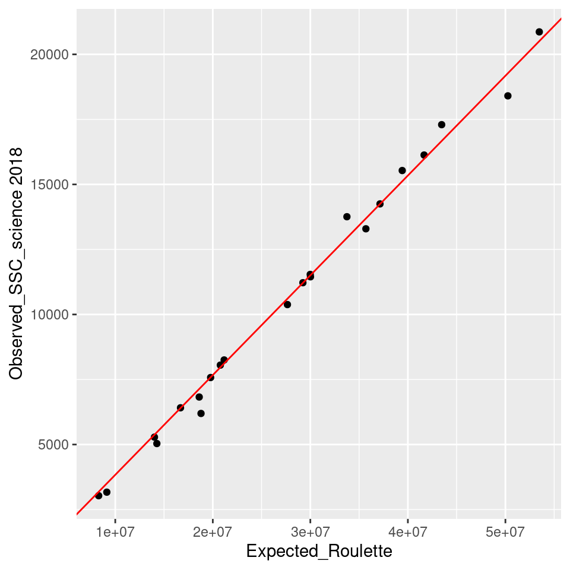
| Version | Author | Date |
|---|---|---|
| 80aaab7 | XSun | 2023-07-17 |
[1] "the scalling factor is 0.00038"[1] "obs = 0.00038* exp"| mutation types | # of de nove SNVs (total = 326,669) |
|---|---|
| a->c t->g | 12253 + 12166 = 22419 |
| a->g t->c | 44124 + 43634 = 87758 |
| a->t t->a | 11257 + 11605 = 22862 |
| c->a g->t | 15885 + 16206 = 32091 |
| c->g g->c | 15834 + 15781 = 31615 |
| c->t g->a | 68209 + 68512 = 136721 |
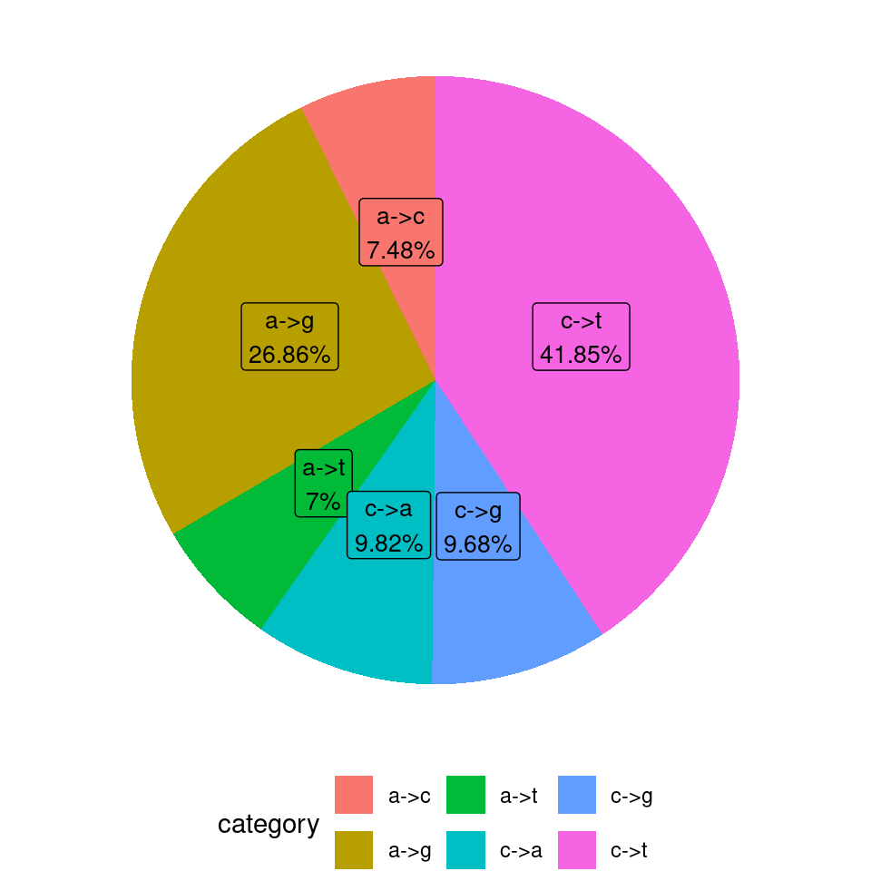
| Version | Author | Date |
|---|---|---|
| 80aaab7 | XSun | 2023-07-17 |
[1] "fitting: observed (SSC) ~ expected (Roulette) + 0"
Call:
lm(formula = denovo_per_chr ~ rl_per_chr + 0)
Residuals:
Min 1Q Median 3Q Max
-774.37 -236.58 -34.94 183.01 768.77
Coefficients:
Estimate Std. Error t value Pr(>|t|)
rl_per_chr 5.337e-04 2.338e-06 228.2 <2e-16 ***
---
Signif. codes: 0 '***' 0.001 '**' 0.01 '*' 0.05 '.' 0.1 ' ' 1
Residual standard error: 335.4 on 21 degrees of freedom
Multiple R-squared: 0.9996, Adjusted R-squared: 0.9996
F-statistic: 5.209e+04 on 1 and 21 DF, p-value: < 2.2e-16 expected observed
1 50253606 27588
2 53474100 28601
3 43464927 23445
4 41663740 21718
5 39421238 21368
6 37141088 19047
7 35695695 18875
8 33750908 18201
9 27650683 14486
10 30014563 15761
11 29987360 15958
12 29236186 15684
13 21163806 11619
14 19776337 10177
15 18607378 9644
16 20772392 11403
17 18791954 9941
18 16688515 8882
19 14264451 7778
20 14017970 7504
21 8298094 4280
22 9134347 4709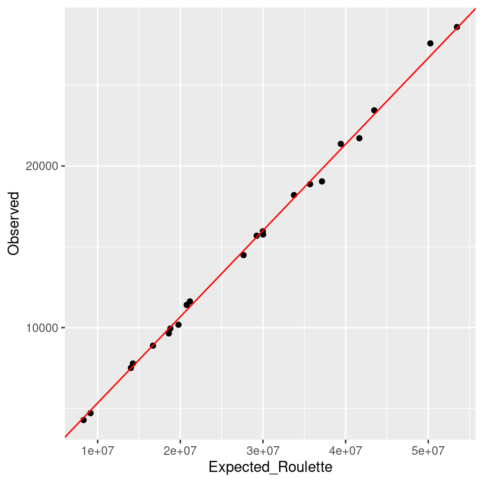
| Version | Author | Date |
|---|---|---|
| 80aaab7 | XSun | 2023-07-17 |
[1] "the scalling factor is 0.00053"[1] "obs = 0.00053* exp"All 6 mutation types, random effect: obs/exp
[1] "the number of observed de novo mutations per window"
0 1 2 3 4 5 6 7 8 9 10 11 12 13 14 16
8130 7778 4334 1636 568 169 74 21 11 7 1 1 4 1 2 2
17 20 21 22 28 69
1 2 1 1 1 1 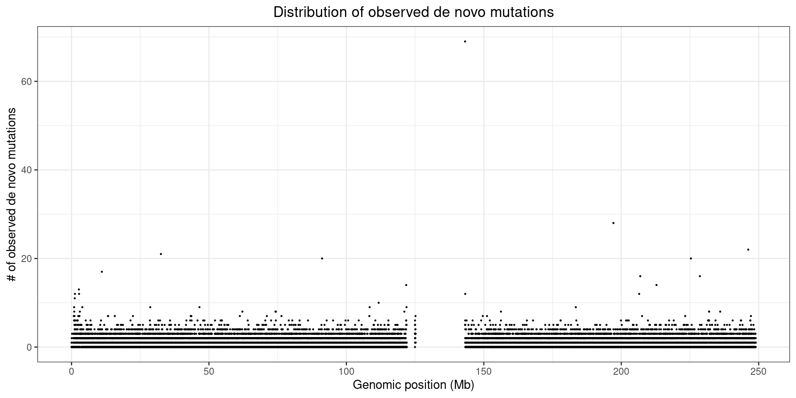
| Version | Author | Date |
|---|---|---|
| 80aaab7 | XSun | 2023-07-17 |
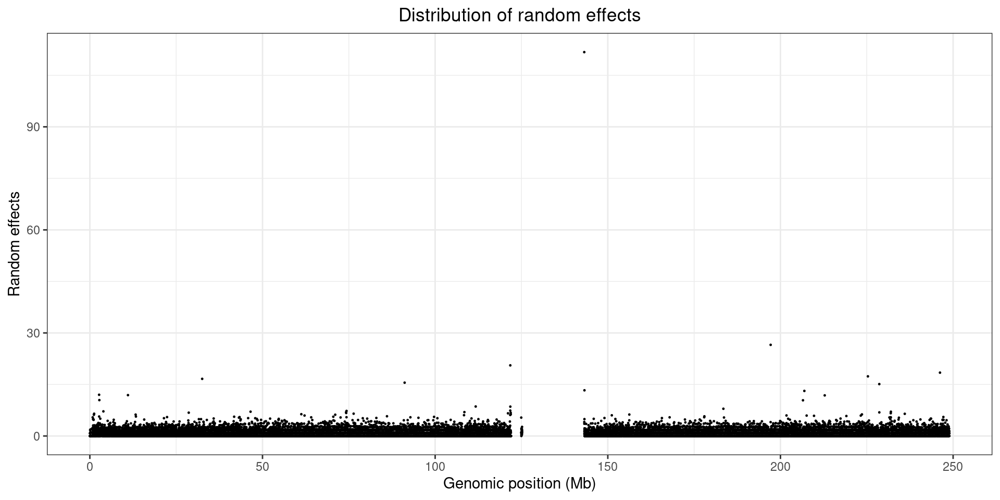
| Version | Author | Date |
|---|---|---|
| 80aaab7 | XSun | 2023-07-17 |
All 6 mutation types, random effect: obs/exp
[1] "the number of observed de novo mutations per window"
0 1 2 3 4 5 6 7 8 9 10 11 12 13 14 15 16 17 18 20
63 150 314 502 698 725 607 543 365 231 131 86 53 34 20 5 8 3 4 1
21 22 23 24 25 26 32 79
2 5 2 1 4 1 1 1 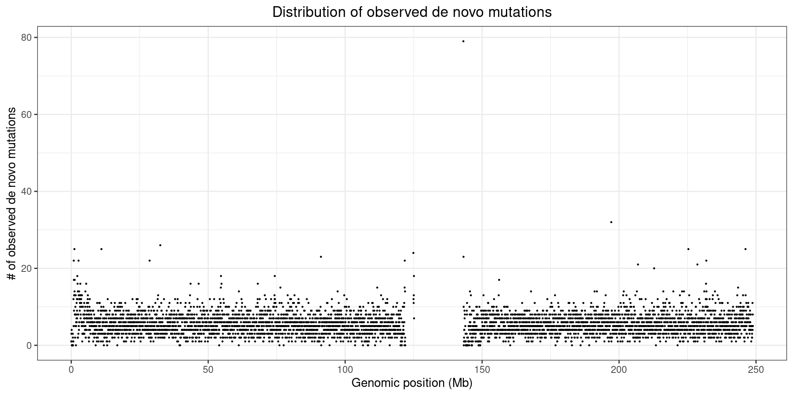
| Version | Author | Date |
|---|---|---|
| 80aaab7 | XSun | 2023-07-17 |
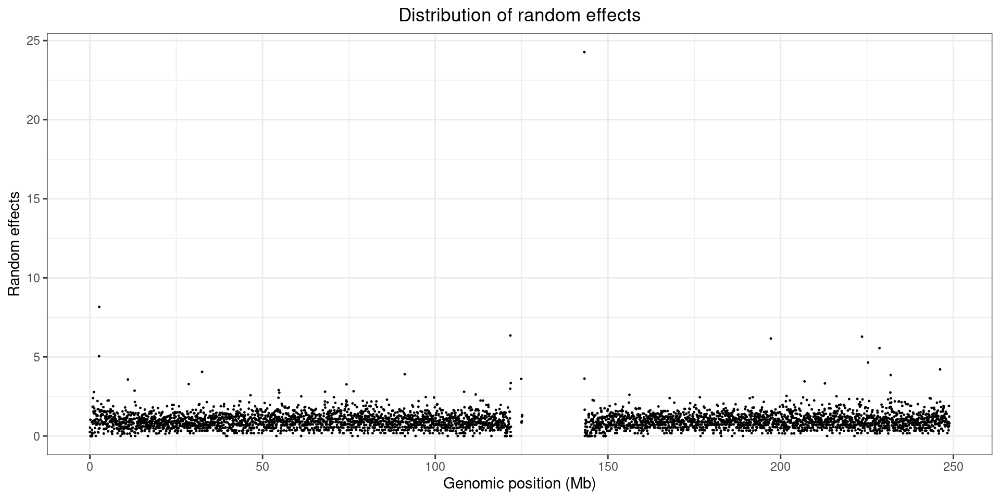
| Version | Author | Date |
|---|---|---|
| 80aaab7 | XSun | 2023-07-17 |
All 6 mutation types, random effect: obs/exp
[1] "the number of observed de novo mutations per window"
0 1 2 3 4 5 6 7 8 9 10 11 12 13 14 15 16 17 19 20 23 28
22 31 43 65 89 95 95 77 78 52 40 21 17 13 3 3 7 4 1 1 1 1 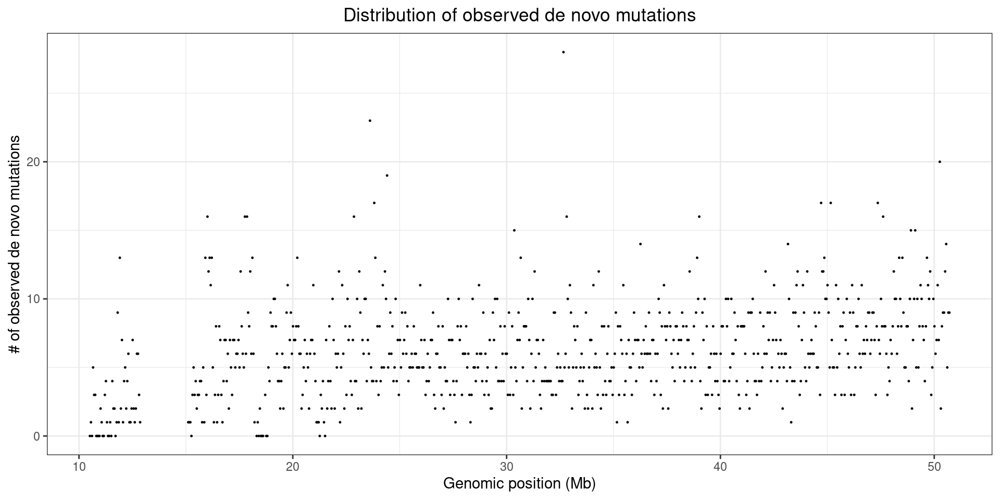
| Version | Author | Date |
|---|---|---|
| 80aaab7 | XSun | 2023-07-17 |
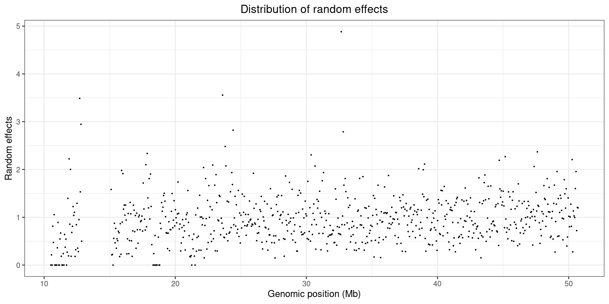
| Version | Author | Date |
|---|---|---|
| 80aaab7 | XSun | 2023-07-17 |
Roulette estimates are converted from hg38 to hg19
[1] "replace simon's exp with Roulette est, group the window by 10kb" chr start end exp_roulette obs_simon
1: chr22 16060501 16070501 0.00296799 0
2: chr22 16070501 16080501 0.00849775 0
3: chr22 16080501 16090501 0.01140076 0
4: chr22 16090501 16100501 0.02290906 0
5: chr22 16100501 16110501 0.01146650 0
6: chr22 16130501 16140501 0.00218633 0
7: chr22 16190501 16200501 0.00111986 0
8: chr22 16210501 16220501 0.00923894 0
9: chr22 16230501 16240501 0.00193838 0
10: chr22 16280501 16290501 0.01867643 0[1] "observed de novo mutations per window"
0 1 2 3 4
2188 946 249 58 5 [1] "fitting: observed ~ expected + 0"
Call:
lm(formula = observed ~ expected + 0)
Residuals:
Min 1Q Median 3Q Max
-522.52 -69.28 4.53 60.29 381.39
Coefficients:
Estimate Std. Error t value Pr(>|t|)
expected 1.892e-04 1.437e-06 131.6 <2e-16 ***
---
Signif. codes: 0 '***' 0.001 '**' 0.01 '*' 0.05 '.' 0.1 ' ' 1
Residual standard error: 201.4 on 21 degrees of freedom
Multiple R-squared: 0.9988, Adjusted R-squared: 0.9987
F-statistic: 1.733e+04 on 1 and 21 DF, p-value: < 2.2e-16 expected observed
1 49912886.39 9021
2 53370373.54 10204
3 43293585.29 8460
4 41641409.13 7897
5 39402781.56 7668
6 36885755.45 7025
7 35473333.95 6556
8 33737210.46 6765
9 13375.72 0
10 29671357.57 5631
11 29940591.30 5658
12 29133423.51 5540
13 21088566.01 3919
14 19755162.04 3694
15 18564553.84 3397
16 20488889.11 3942
17 18505456.01 2979
18 16680358.32 3248
19 14251417.78 2450
20 13758909.82 2615
21 8092686.42 1468
22 8731767.69 1638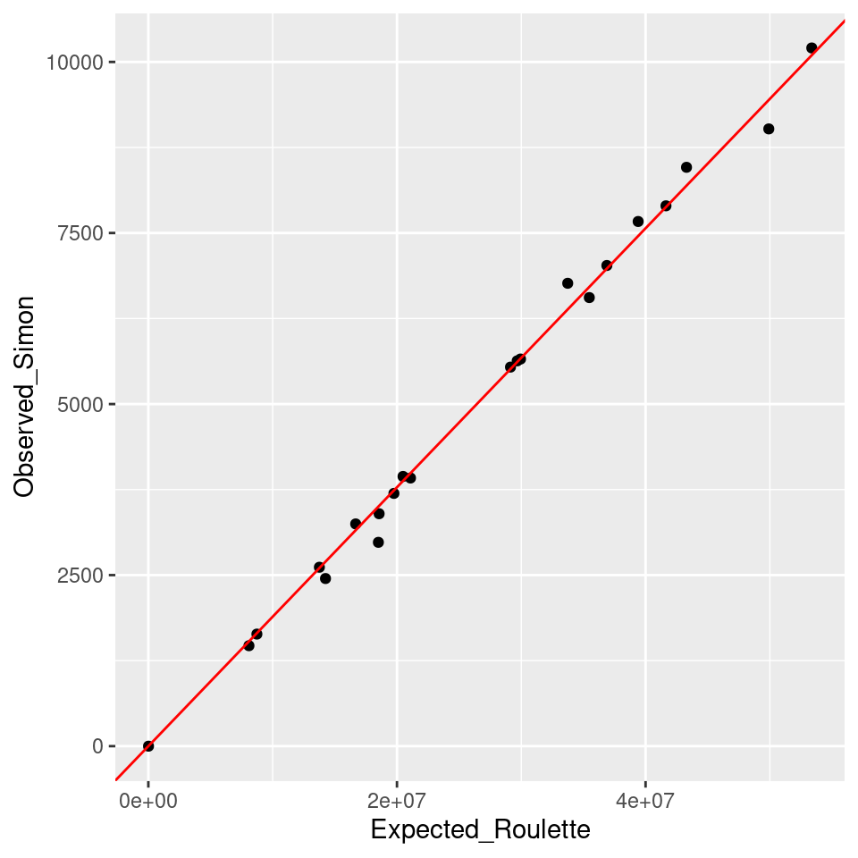
| Version | Author | Date |
|---|---|---|
| 80aaab7 | XSun | 2023-07-17 |
[1] "the scalling factor is 0.00019"[1] "obs = 0.00019* exp"| mutation types | # of de nove SNVs (total = 107377) |
|---|---|
| a->c t->g | 4014 + 4120 = 8134 |
| a->g t->c | 14229 + 14094 = 28323 |
| a->t t->a | 3515 + 3636 = 7141 |
| c->a g->t | 5030 + 4843 = 9873 |
| c->g g->c | 4830 + 5038 = 9868 |
| c->t g->a | 21747 + 22281 = 44028 |
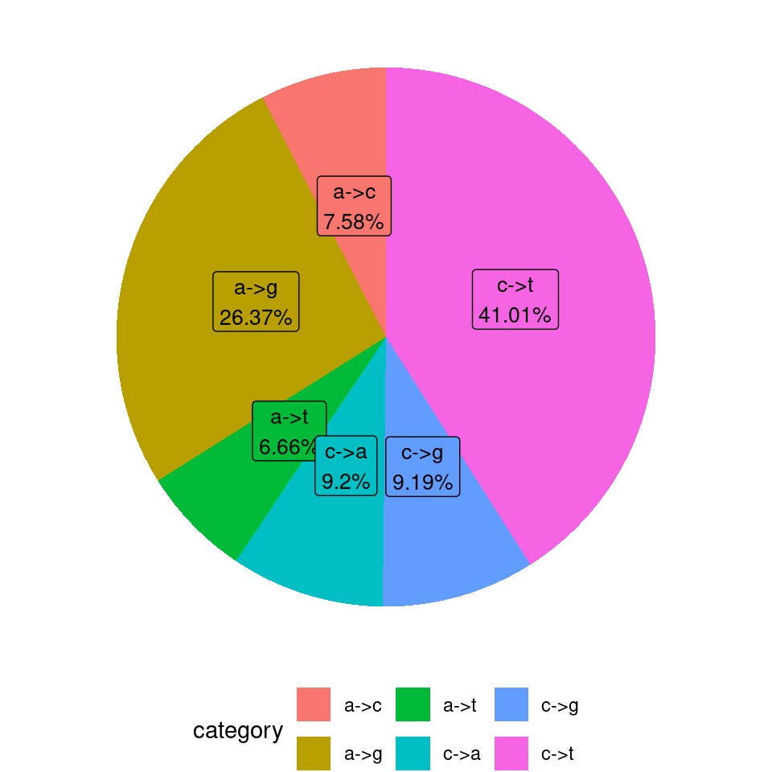
| Version | Author | Date |
|---|---|---|
| 80aaab7 | XSun | 2023-07-17 |
[1] "fitting: observed (MSSNG) ~ expected (Roulette) + 0"
Call:
lm(formula = denovo_per_chr ~ rl_per_chr + 0)
Residuals:
Min 1Q Median 3Q Max
-1487.2 -281.8 185.9 429.9 830.4
Coefficients:
Estimate Std. Error t value Pr(>|t|)
rl_per_chr 1.735e-04 4.090e-06 42.43 <2e-16 ***
---
Signif. codes: 0 '***' 0.001 '**' 0.01 '*' 0.05 '.' 0.1 ' ' 1
Residual standard error: 586.7 on 21 degrees of freedom
Multiple R-squared: 0.9885, Adjusted R-squared: 0.9879
F-statistic: 1800 on 1 and 21 DF, p-value: < 2.2e-16 expected observed
1 50253606 9467
2 53474100 9087
3 43464927 8066
4 41663740 5742
5 39421238 6094
6 37141088 5970
7 35695695 6610
8 33750908 5460
9 27650683 4714
10 30014563 5721
11 29987360 5573
12 29236186 5449
13 21163806 2904
14 19776337 3323
15 18607378 3663
16 20772392 3976
17 18791954 4091
18 16688515 2650
19 14264451 3282
20 14017970 2608
21 8298094 1146
22 9134347 1781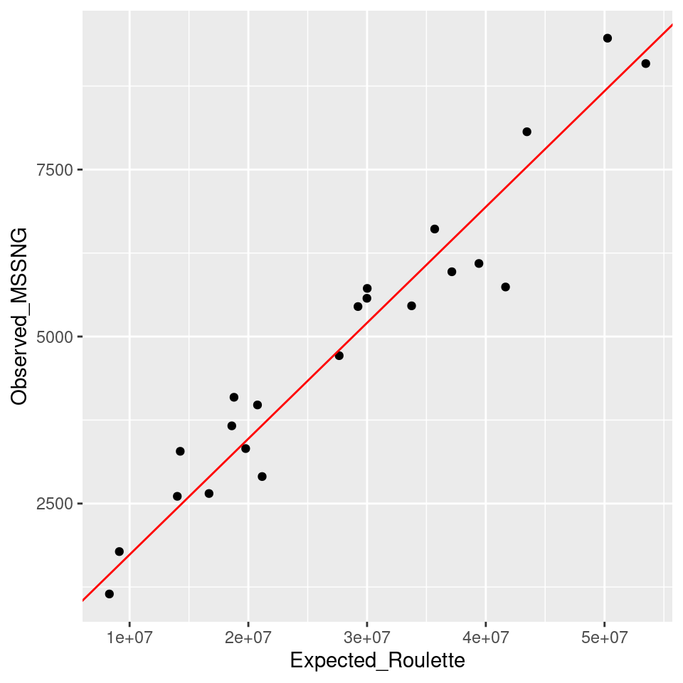
| Version | Author | Date |
|---|---|---|
| 80aaab7 | XSun | 2023-07-17 |
[1] "the scalling factor is 0.00017"[1] "obs = 0.00017* exp"All 6 mutation types, random effect: obs/exp
[1] "the number of observed de novo mutations per window"
0 1 2 3 4 5 6 7 8 9 10 11 12 13 14 16
2040 431 467 441 388 298 203 115 87 41 23 5 5 5 3 3
21 24 25 32 44
1 1 1 1 1 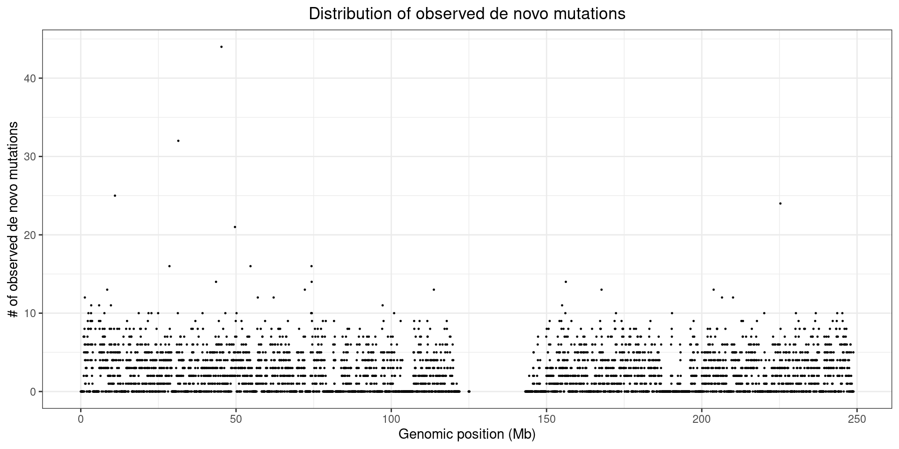
| Version | Author | Date |
|---|---|---|
| 80aaab7 | XSun | 2023-07-17 |
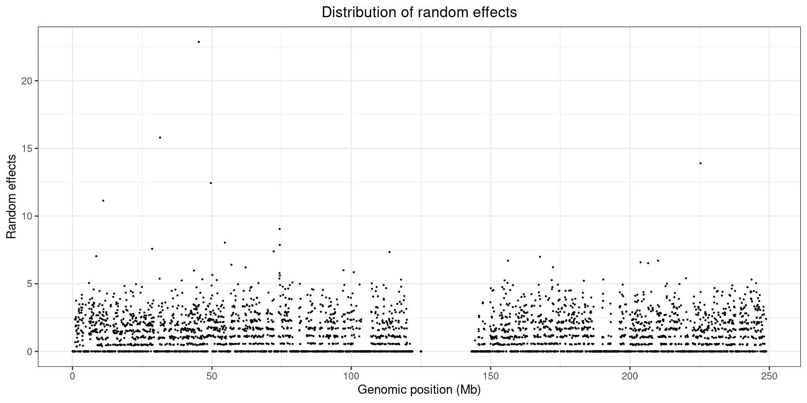
| Version | Author | Date |
|---|---|---|
| 80aaab7 | XSun | 2023-07-17 |
[1] "fitting: observed (ASC + MSSNG + SPARK) ~ expected (Roulette) + 0"
Call:
lm(formula = denovo_per_chr ~ rl_per_chr + 0)
Residuals:
Min 1Q Median 3Q Max
-2456.5 -609.1 141.3 799.9 2893.6
Coefficients:
Estimate Std. Error t value Pr(>|t|)
rl_per_chr 2.309e-04 8.411e-06 27.45 <2e-16 ***
---
Signif. codes: 0 '***' 0.001 '**' 0.01 '*' 0.05 '.' 0.1 ' ' 1
Residual standard error: 1207 on 21 degrees of freedom
Multiple R-squared: 0.9729, Adjusted R-squared: 0.9716
F-statistic: 753.5 on 1 and 21 DF, p-value: < 2.2e-16 expected observed
1 50253606 13056
2 53474100 11759
3 43464927 10165
4 41663740 7163
5 39421238 8111
6 37141088 7959
7 35695695 8409
8 33750908 6804
9 27650683 6376
10 30014563 6975
11 29987360 7864
12 29236186 7596
13 21163806 3483
14 19776337 4719
15 18607378 4925
16 20772392 6135
17 18791954 6406
18 16688515 3148
19 14264451 6187
20 14017970 3678
21 8298094 1548
22 9134347 2771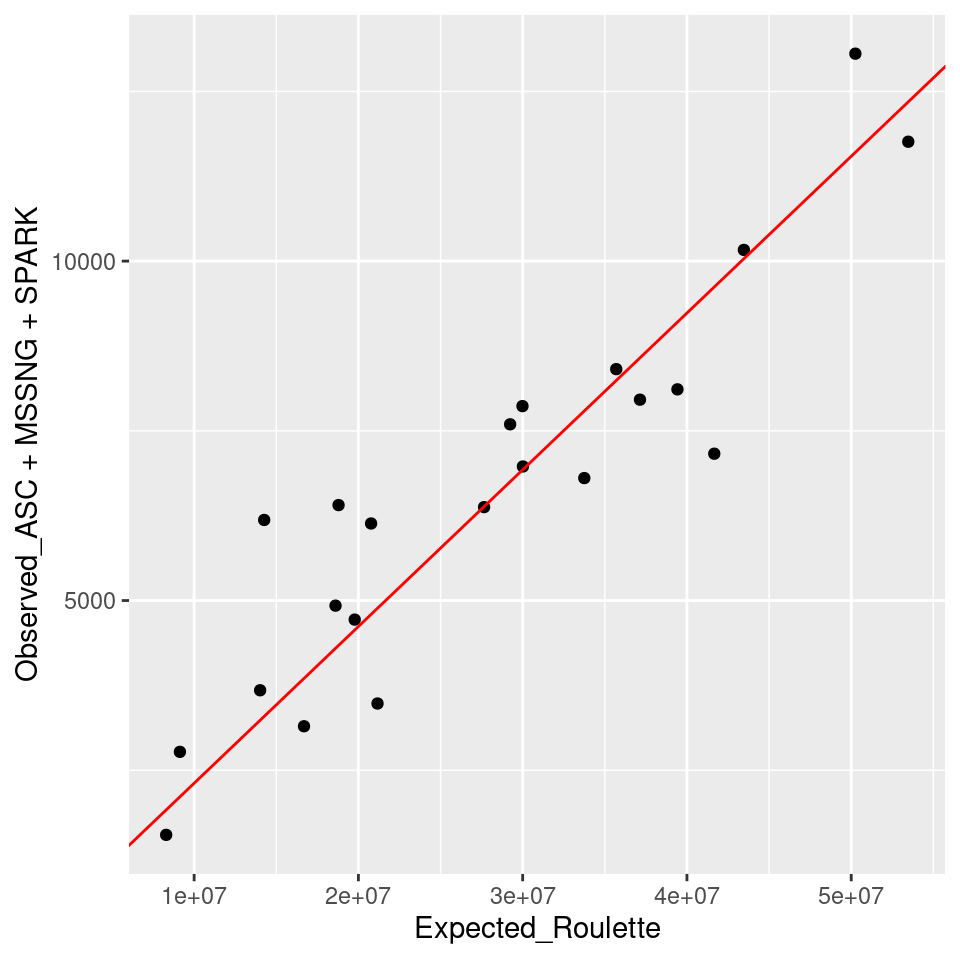
[1] "the scalling factor is 0.00023"[1] "obs = 0.00023* exp"
sessionInfo()R version 4.2.0 (2022-04-22)
Platform: x86_64-pc-linux-gnu (64-bit)
Running under: CentOS Linux 7 (Core)
Matrix products: default
BLAS/LAPACK: /software/openblas-0.3.13-el7-x86_64/lib/libopenblas_haswellp-r0.3.13.so
locale:
[1] C
attached base packages:
[1] stats graphics grDevices utils datasets methods base
other attached packages:
[1] ggplot2_3.5.1 data.table_1.14.2
loaded via a namespace (and not attached):
[1] Rcpp_1.0.8.3 highr_0.9 pillar_1.9.0 compiler_4.2.0
[5] bslib_0.3.1 later_1.3.0 jquerylib_0.1.4 git2r_0.30.1
[9] workflowr_1.7.0 tools_4.2.0 digest_0.6.29 gtable_0.3.0
[13] jsonlite_1.8.0 evaluate_0.15 lifecycle_1.0.4 tibble_3.2.1
[17] pkgconfig_2.0.3 rlang_1.1.2 cli_3.6.1 rstudioapi_0.13
[21] yaml_2.3.5 xfun_0.41 fastmap_1.1.0 withr_2.5.0
[25] dplyr_1.1.4 stringr_1.5.1 knitr_1.39 generics_0.1.2
[29] fs_1.5.2 vctrs_0.6.5 sass_0.4.1 tidyselect_1.2.0
[33] rprojroot_2.0.3 grid_4.2.0 glue_1.6.2 R6_2.5.1
[37] fansi_1.0.3 rmarkdown_2.25 farver_2.1.0 magrittr_2.0.3
[41] whisker_0.4 scales_1.3.0 promises_1.2.0.1 htmltools_0.5.2
[45] colorspace_2.0-3 httpuv_1.6.5 labeling_0.4.2 utf8_1.2.2
[49] stringi_1.7.6 munsell_0.5.0